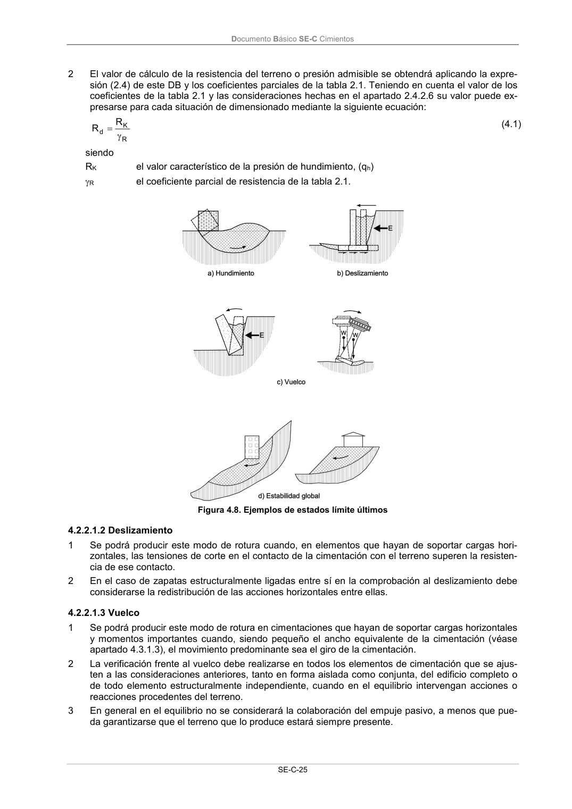

DB-SE-C · 4.2.2.1.2 Deslizamiento · 4.2.2.1.3 Vuelco · versión 2019-12-20
SHA256: a71133f4b0dca253e45ea3071c70f2a512354bcc5cd841bf89b1a502f567ac5e · página física 30 de 165 · métodos de encabezado
solo si están cotejados.
Formatos: Markdown · JSON de bloques · PDF p. 30 · imagen PNG
Documento Básico SE-C Cimientos SE-C-25 2 El valor de cálculo de la resistencia del terreno o presión admisible se obtendrá aplicando la expre- sión (2.4) de este DB y los coeficientes parciales de la tabla 2.1. Teniendo en cuenta el valor de los coeficientes de la tabla 2.1 y las consideraciones hechas en el apartado 2.4.2.6 su valor puede ex- presarse para cada situación de dimensionado mediante la siguiente ecuación: R K d R R (4.1) siendo RK el valor característico de la presión de hundimiento, (qh) R el coeficiente parcial de resistencia de la tabla 2.1. Figura 4.8. Ejemplos de estados límite últimos 4.2.2.1.2 Deslizamiento 1 Se podrá producir este modo de rotura cuando, en elementos que hayan de soportar cargas hori- zontales, las tensiones de corte en el contacto de la cimentación con el terreno superen la resisten- cia de ese contacto. 2 En el caso de zapatas estructuralmente ligadas entre sí en la comprobación al deslizamiento debe considerarse la redistribución de las acciones horizontales entre ellas. 4.2.2.1.3 Vuelco 1 Se podrá producir este modo de rotura en cimentaciones que hayan de soportar cargas horizontales y momentos importantes cuando, siendo pequeño el ancho equivalente de la cimentación (véase apartado 4.3.1.3), el movimiento predominante sea el giro de la cimentación. 2 La verificación frente al vuelco debe realizarse en todos los elementos de cimentación que se ajus- ten a las consideraciones anteriores, tanto en forma aislada como conjunta, del edificio completo o de todo elemento estructuralmente independiente, cuando en el equilibrio intervengan acciones o reacciones procedentes del terreno. 3 En general en el equilibrio no se considerará la colaboración del empuje pasivo, a menos que pue- da garantizarse que el terreno que lo produce estará siempre presente.
